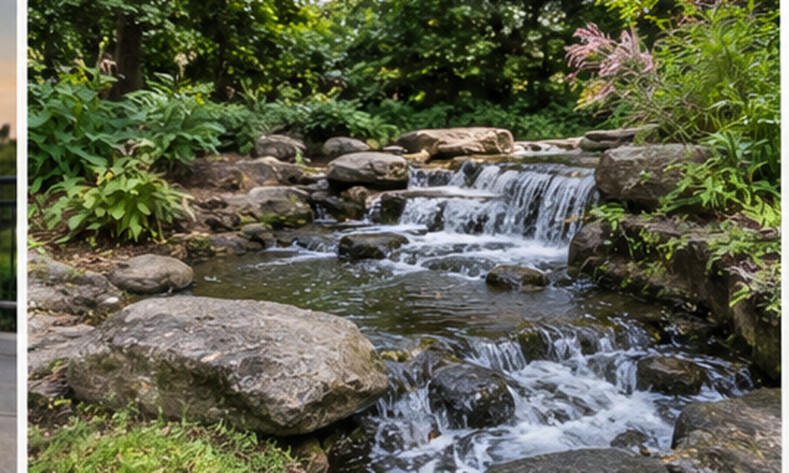

Rose Garden Walk
A short, flat loop through the formal beds beside the Visitor Centre. Peak bloom runs from late spring to the first frosts, and the shaded benches make it a good rest stop.
Four marked routes cover the whole park. Pick by time and terrain, then read the route notes below.
| Trail | Distance | Time | Level | Surface |
|---|---|---|---|---|
| Rose Garden Walk | 0.8 km | 15 min | Easy | Paved |
| Lakeside Loop | 2.4 km | 35 min | Easy | Paved |
| Cedar Ridge Trail | 4.8 km | 1 h 30 min | Moderate | Packed dirt, steps |
| Old Mill Circuit | 7.2 km | 2 h 15 min | Hard | Rocks and roots |
A short, flat loop through the formal beds beside the Visitor Centre. Peak bloom runs from late spring to the first frosts, and the shaded benches make it a good rest stop.

The park's busiest path hugs the water the whole way round. Start at Gate A, walk anticlockwise, and you will reach the boathouse cafe at the halfway point.

The path climbs gently through cedar and maple to a lookout over the river bend. Expect about 200 steps near the top; the descent follows a wider, gentler track.

The longest route links the ridge, the river and the restored mill. Sections are rocky and can be slippery after rain, so carry water and start before 16:00 in winter.